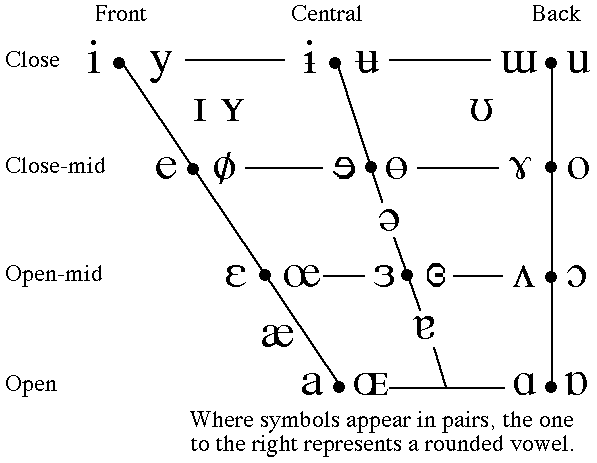

Return to the IPA chart
Vowel chart.
To hear the sounds click on a symbol.

Additional Recordings
Daniel Jones' Cardinal Vowels
John Wells, Jill House, and Peter Ladefoged Whole chart.
Peter Ladefoged Primary Cardinal Vowels and Secondary Cardinal Vowels